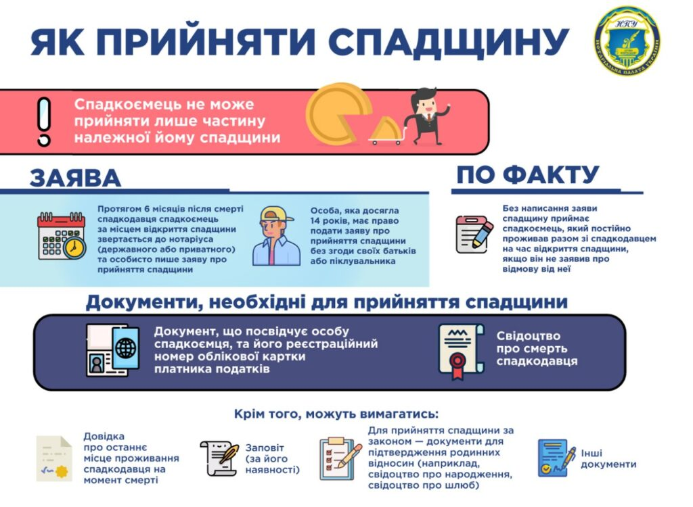
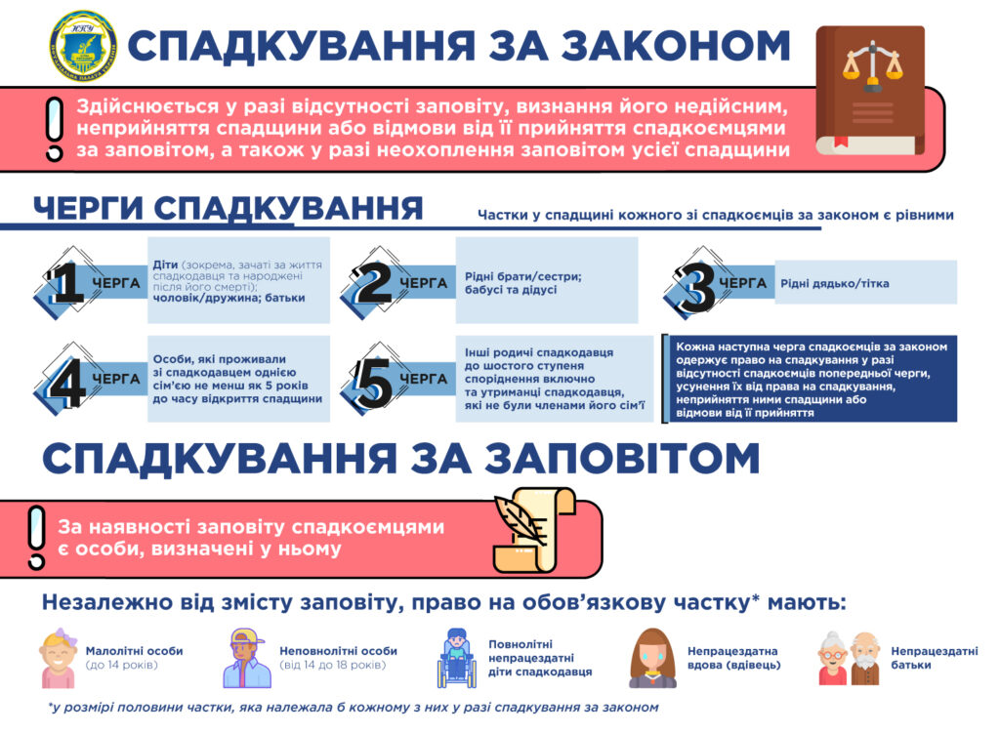

Оформлення спадщини
Шановні клієнти! Приватний Нотаріус Олена Дзера здійснює оформлення спадщини.
Нагадуємо, що приватні нотаріуси мають право оформлювати спадкові права на майно осіб, які померли після 31 травня 2009 року (тобто з 01 червня 2009 року включно). Наголошуємо, що відповідно до Закону України “Про нотаріат” в оформленні спадщини приватні нотаріуси наділені усіма повноваженнями на рівні з державними нотаріусами.
Що необхідно знати про оформлення спадщини:
- Процедура оформлення спадщини більше не є важким довготривалим процесом відстоювання у довгих чергах, тепер Ви можете просто зателефонувати до нас і записатися на прийом у зручний для Вас час.
- Якщо у Вас сталася трагічна подія і Вам необхідно оформити спадкові права, для наших клієнтів ми намагаємося зробити оформлення спадщини якнайменш складним і затратним процесом.
- Не потрібно зволікати з оформленням спадщини, закон встановлює шестимісячний термін для подачі заяви про прийняття спадщини. Даний термін починає свій перебіг з дня смерті спадкодавця.


Документи, що подаються спадкоємцями для оформлення спадщини:
І. Відкриття спадкової справи:
Для подачі заяви про прийняття спадщини Вам необхідно особисто з’явитися до нотаріуса, при собі мати: паспорт, реєстраційний номер облікової картки платника податків, свідоцтво про смерть, довідку про причину смерті, довідку ЖЕО з місця проживання померлого, яка підтверджує, що померлий по день смерті проживав за конкретною вказаною адресою, будинкову книгу (якщо померлий був прописаний в приватному будинку), довідка ЖБК (якщо будинок, в якому був прописаний померлий, – кооперативний); документ, який підтверджує родинні відносини з померлим (свідоцтво про народження, свідоцтво про укладення шлюбу тощо); довідка ЖЕО Ф-№3 (про склад зареєстрованих з померлим осіб); заповіт (за наявності). Всі документи подаються в оригіналах, нотаріус самостійно знімає копії для формування спадкової справи. Додатково, за наявності на руках у спадкоємців, нотаріусу пред’являються документи, що підтверджують право власності померлого на спадкове майно (свідоцтва про право власності на квартиру, договір купівлі-продажу, дарування, ощадні книжки тощо);
У разі, якщо з різних причин Ви не маєте можливості зібрати перерахований пакет документів, нотаріус має право відкрити спадкову справу за заявою спадкоємця при наявності лише його паспорта та реєстраційного номера облікової картки платника податків. У подальшому вищеперераховані документи збираються спадкоємцем або витребовуються в компетентних органах на запит нотаріуса.
ІІ. Провадження по спадковій справі:
- Після відкриття спадкової справи у нотаріуса за заявою будь-кого з спадкоємців усі інші спадкоємці подають свої заяви про прийняття спадщини вже до того нотаріуса, який відкрив спадкову справу;
- Якщо Ви подали заяву про прийняття спадщини до нотаріуса до шести місяців після смерті спадкодавця, то подальше оформлення Ваших спадкових прав вже не обмежується законом конкретними строками;
- Після відкриття спадкової справи спадкоємці за запитом нотаріуса отримують в компетентних органах (в БТІ, в органах держкомзему тощо) документи, необхідні для переоформлення спадкового майна на ім’я спадкоємців. Для цього спадкоємці надають нотаріусу документи, що підтверджують право власності померлого на спадкове майно (свідоцтво про право власності на квартиру, договір купівлі-продажу, дарування, ощадні книжки тощо). У разі відсутності на руках у спадкоємців вказаних документів, дані документи отримуються на запит нотаріуса;
- Важливо звернути Вашу увагу на те, що за виготовлення запитів Ви не сплачуєте додаткових коштів, усі ці витрати входять у фіксовану суму, яка сплачується при відкритті спадкової справи. Наші нотаріуси здійснюють постійний юридичний супровід і консультують Вас при зібранні Вами документів необхідних для оформлення Ваших спадкових прав і допомагають Вам долати труднощі, які можуть виникнути при отриманні Вами документів в державних органах в межах нотаріальної компетенції.
ІІІ. Отримання свідоцтва про право на спадщину:

- Після спливу шести місяців після смерті спадкодавця і отримання усіх необхідних документів нотаріус має право видати спадкоємцям свідоцтва про право на спадщину;
- Нотаріус призначає за попереднім узгодженням з Вами зручний для Вас та інших спадкоємців (за наявності) час для видачі свідоцтв про право на спадщину;
- Проекти свідоцтв готуються заздалегідь, в обумовлений час Ви приходите та отримуєте Свідоцтво про право на спадщину.
На цьому закінчується процедура оформлення спадщини у нотаріуса.